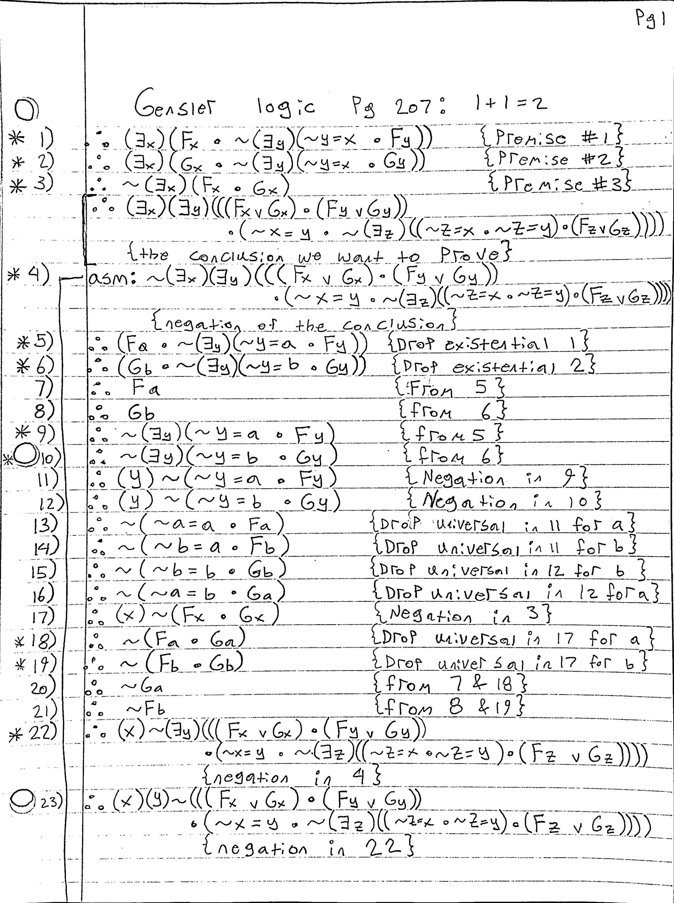
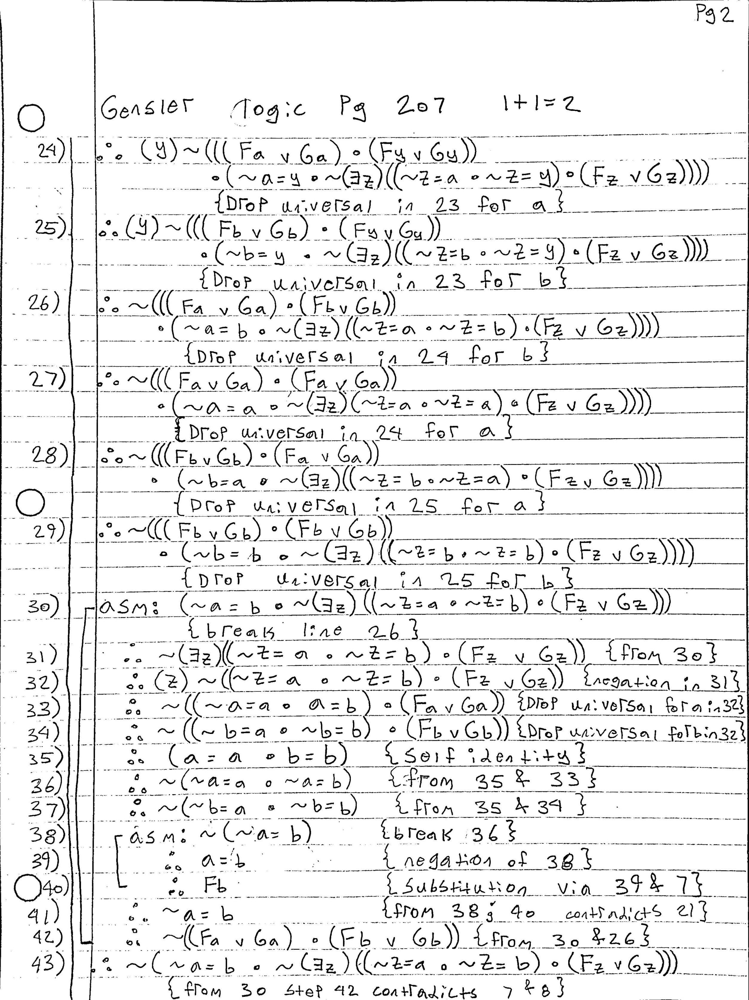

Several months ago I was reading a book called Introduction To Logic by Harry Gensler with the intent of teaching myself some new things about logic when I came across the following passage:

I decided this sounded fun so I took a crack at it using the system shown in the book. Each step in the proof is numbered, the proofs are structured similar to a two column proof, the justification for each derivation is inside the curly braces to the right, assumptions that lead to contradictions are blocked off with a line and the following statement uses the source of contradiction as its reasoning.
 
The exercise was very entertaining, this was probably my third attempt the previous ones ending in headaches and failure. There are still errors in this one, for example I accidently placed ∴ symbols in front of my premises at the start, and I am reasonably sure my closing parentheses are not all perfectly matched.
In retrospect I feel like I gained a deeper understanding of how hard it can be to sift through certain topics in a logical system. Some problems in certain contexts can be very elegant to state and work out while others can devolve into total nightmares.
Fill me in if you catch any errors in my proof and I will post your corrections on this page!